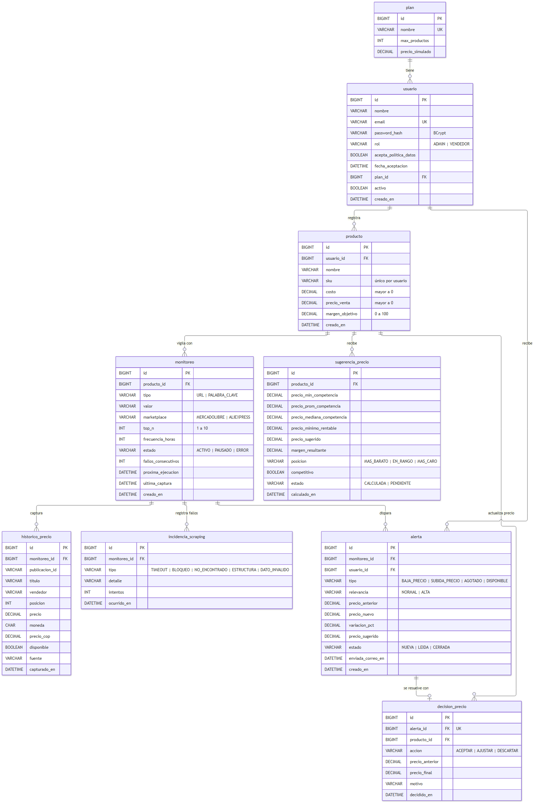
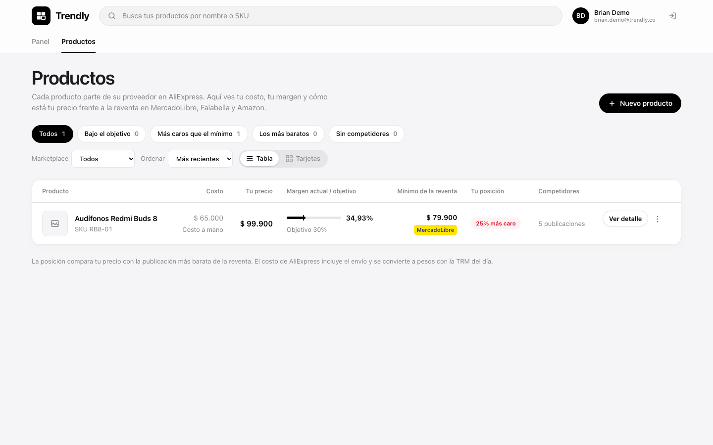
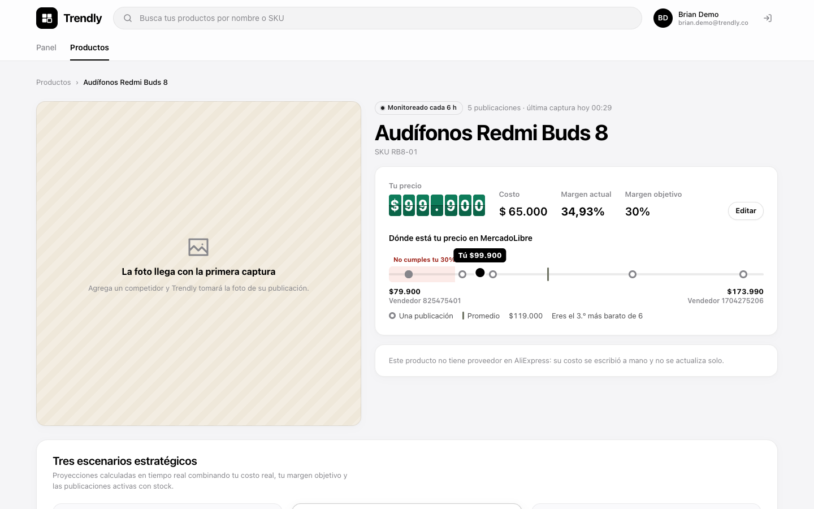
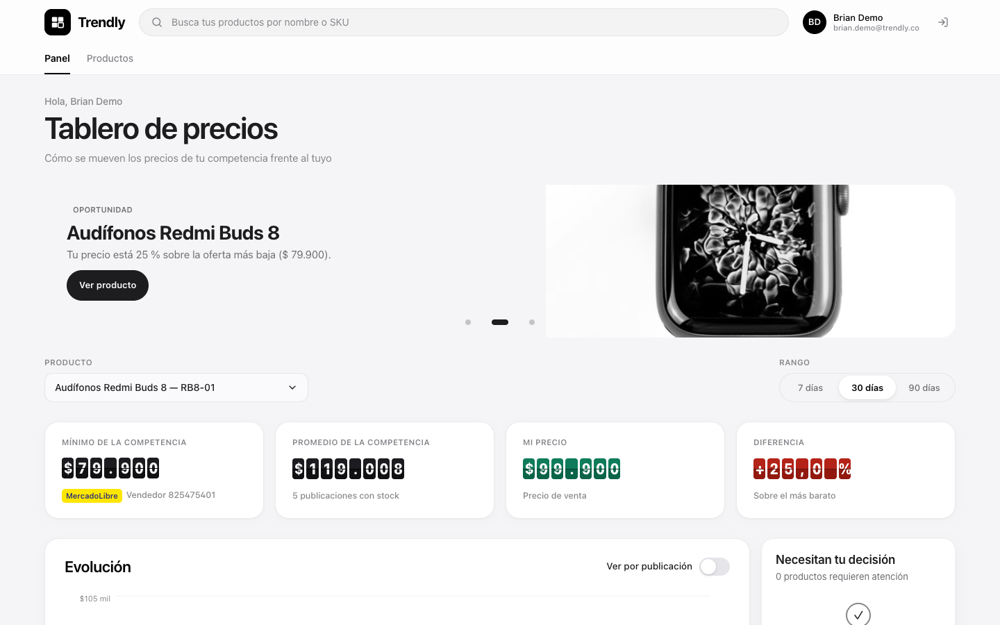

Plataforma de análisis de precios para comercio electrónico y dropshipping en Colombia
| Curso | Ingeniería de Software III · Universidad del Quindío · 2026-2 |
| Docente | Cristian David Henao Hoyos |
| Equipo | Brian Zuleta Tobón (Scrum Master, backend) · Raquel López Aristizábal (Product Owner, datos y análisis) · Juan David Martínez Valencia (frontend) |
| Versión | 1.0 · Avance del proyecto (Sprints 1 a 3) · 23 de octubre de 2026 |
| Repositorio | https://github.com/BrianZuto/Trendly-app |
| Jira | https://uqvirtual-team-q8za891n.atlassian.net/jira/software/projects/SCRUM/boards/1 |
Los vendedores en línea fijan sus precios revisando a mano, una por una, las publicaciones de la competencia. Es lento, se desactualiza y les hace perder margen o ventas. Trendly automatiza ese seguimiento: vigila cada 6 horas el precio y la disponibilidad de los competidores en MercadoLibre y AliExpress, guarda el histórico en pesos colombianos y lo presenta en un tablero para decidir el precio propio.
El sistema soporta tres procesos de negocio encadenados (modelados en BPMN en la Definición del Proyecto):
| Proceso | Qué hace | Estado en este avance |
|---|---|---|
| P1 · Registro de usuarios y productos a monitorear | Registro con aceptación de la política de datos, inicio de sesión por rol, registro del producto propio (costo, precio, margen objetivo) y de sus competidores por URL o palabra clave. | Implementado |
| P2 · Monitoreo, recolección y análisis de precios | Job programado cada 6 h, scrapers por marketplace, conversión a COP con la TRM e histórico de precios. | Recolección e histórico implementados; precio sugerido en el Sprint 4 |
| P3 · Alertas, reportes y toma de decisiones | Alertas por correo y push, decisiones de precio y reportes. | Planeado (Sprints 4 y 5) |
Este documento describe la arquitectura tal como está construida y desplegada al cierre del Sprint 3, y las decisiones que la explican.
| Atributo | Escenario | Cómo se atiende |
|---|---|---|
| Seguridad | Un vendedor nunca ve ni modifica datos de otro; las contraseñas y secretos no se exponen. | JWT sin sesión, autorización por rol, dueño tomado del token (nunca del cuerpo), BCrypt, secretos solo en variables de entorno. |
| Mantenibilidad | Si un marketplace cambia su sitio o su API, solo se toca su adaptador. | Patrón Strategy/Adapter: interfaz MarketplaceScraper con una implementación por marketplace. |
| Disponibilidad del monitoreo | Un fallo en una captura no detiene el ciclo ni corrompe el histórico. | Los scrapers nunca lanzan excepciones (devuelven FALLO con motivo); un ciclo a la vez; reprogramación por monitoreo. |
| Cumplimiento legal | El registro deja constancia de la autorización de datos (Ley 1581 de 2012) y la recolección respeta las condiciones de los sitios. | RN-02; uso de la API oficial de MercadoLibre en lugar de rastrear su HTML. |
| Calidad verificable | Ningún cambio llega a develop sin pruebas en verde y cobertura suficiente. | CI en GitHub Actions con checks obligatorios, JaCoCo ≥ 70 % y quality gate de SonarCloud. |
| Costo | Operar con presupuesto de estudiante. | Azure Functions con consumo flexible, MySQL Flexible B1ms (capa gratuita), frontend en Vercel. |
Quién usa Trendly y con qué sistemas externos se comunica.
| Contenedor | Responsabilidad | Tecnología |
|---|---|---|
| Aplicación web | Registro, inicio de sesión, productos, competidores, tablero de precios. Guarda el token y lo envía en cada petición; redirige al login ante un 401. | React 19, Vite 8, React Router, Axios, Recharts, GSAP |
| API REST | Reglas de negocio, seguridad, persistencia, scrapers, histórico y el ciclo de recolección. | Spring Boot 4.1 (Web MVC, Security, Data JPA, Validation, Actuator), jjwt 0.12, Flyway, Jsoup, Selenium, Resilience4j |
| Base de datos | Usuarios, planes, productos, monitoreos, histórico de precios, TRM. Esquema versionado con Flyway (V1 a V4). | MySQL 8 (H2 en modo MySQL para pruebas) |
| Job de recolección | Cada 6 h llama al endpoint interno con una API key. Si el backend responde con error, la ejecución queda fallida en el historial de Azure. | Azure Functions (Consumo flexible), Node.js 22 |
El backend es un monolito modular: un paquete por área del negocio, todos bajo co.trendly. Los controladores no tienen lógica; las reglas viven en los servicios.
| Paquete | Componentes principales | Responsabilidad |
|---|---|---|
seguridad | SecurityConfig, JwtAuthFilter, JwtService, AuthController, AuthService | Cadena de seguridad sin sesión, emisión y validación de JWT, login y /me, errores 401/403 en JSON, CORS. |
usuario | RegistroController, RegistroService, Usuario, Plan, Rol | Registro con política de datos (RN-02), BCrypt, plan Gratuito por defecto. |
producto | ProductoController, ProductoService, AltaProductoService | CRUD del producto propio, margen actual, cupo del plan (RN-01), alta con monitoreos de reventa en una transacción. |
monitoreo | MonitoreoController, MonitoreoService, PublicacionUrl, CompetenciaService | Competidores por URL o palabra clave, reconocimiento del marketplace, publicaciones vigentes y resumen de competencia. |
scraping | MarketplaceScraper (interfaz), MercadoLibreScraper, AliExpressScraper, ClienteApiMercadoLibre, FuenteHttp, NavegadorHeadless | Patrón Strategy/Adapter: una implementación por marketplace que nunca lanza excepciones y devuelve ResultadoScraping (OK con publicaciones o FALLO con motivo). Límite de 1 petición cada 2 s con Resilience4j. |
historico | HistoricoService, TrmService, DatosGovTrmCliente | Guarda cada captura en COP con la TRM del día, evita duplicados y publica el evento PrecioActualizado (base de las alertas del Sprint 4). |
recoleccion | RecoleccionController, RecoleccionService, RecoleccionLocal | Endpoint interno protegido con API key, ciclo por lotes de 20 en segundo plano, un ciclo a la vez, registro de cada ciclo. |
comun | ManejadorErrores, ErrorDeNegocio | Traduce las excepciones a un JSON uniforme { status, error, message, path }. |
El esquema se crea y versiona con Flyway (V1__esquema_inicial, V2__datos_iniciales, V3__monitoreo_id_publicacion, V4__trm). Los enumerados se guardan como texto con CHECK; los montos en COP como DECIMAL(14,2); las fechas en UTC.

| Tabla | Qué guarda | Restricciones clave |
|---|---|---|
plan | Gratuito (10 productos) y Pro (100) | Nombre único; max_productos > 0 |
usuario | Vendedores y administradores, hash BCrypt, constancia de la política de datos | Email único; rol ADMIN o VENDEDOR |
producto | Producto propio: costo, precio de venta, margen objetivo | SKU único por vendedor; costo y precio > 0; margen 0–100 |
monitoreo | Competidor por URL o palabra clave, marketplace, frecuencia, estado, próxima ejecución | Publicación única por producto; top N 1–10 |
historico_precio | Cada captura: publicación, posición, precio original, moneda, precio en COP, disponibilidad | Precio y precio COP > 0; borrado en cascada con el monitoreo |
trm | TRM del día usada en las conversiones | Una por vigencia |
sugerencia_precio, alerta, decision_precio, incidencia_scraping | Creadas para los Sprints 4 y 5 | — |
Navegador API (Spring Security) MySQL
│ POST /auth/login {email, password} │
│──────────────────────────▶ AuthService: normaliza el email │
│ findByEmail ──────────────────────▶│
│ BCrypt.matches (hash de relleno si │
│ el email no existe: mismo tiempo) │
│◀── 200 {token (JWT HS256, 1 h: sub=id, email, rol)} │
│ GET /productos Authorization: Bearer <token> │
│──────────────────────────▶ JwtAuthFilter valida firma, emisor │
│ y vencimiento → ROLE_<rol> │
│ ProductoService (dueño = id del JWT)▶│
│◀── 200 [productos con su competencia] (401 sin token / 403 rol)
Azure Function (timer 0 0 */6 * * *) │ POST /api/v1/interno/recoleccion/ejecutar X-Api-Key ▼ RecoleccionService.iniciar() ── ya hay un ciclo? ──▶ 200 EN_CURSO (se ignora) │ 202 INICIADO (responde de inmediato) y sigue en segundo plano: ├─ lote = monitoreos ACTIVOS con proxima_ejecucion ≤ inicio (20 por consulta) ├─ por cada monitoreo: │ scraper = el de su marketplace (Strategy) │ resultado = scraper.obtener(m) ── nunca lanza: OK o FALLO(motivo) │ OK → HistoricoService.guardar: COP con la TRM, sin duplicados (1 h), │ evento PrecioActualizado │ FALLO → suma un fallo seguido (a los 3 → ERROR, Sprint 4) │ proxima_ejecucion = ahora + frecuencia └─ log: procesados, exitosos, fallidos, puntos nuevos
main; el backend corre como contenedor.| Elemento | Dirección |
|---|---|
| Aplicación web | https://trendlyapp.vercel.app |
| API REST | https://trendly-api.prouddune-5a774dac.eastus2.azurecontainerapps.io/api/v1 (salud: https://trendly-api.prouddune-5a774dac.eastus2.azurecontainerapps.io/actuator/health) |
| Job de recolección | Function trendly-recoleccion-bz, función recoleccion (temporizador) |
| Calidad | https://sonarcloud.io/summary/new_code?id=BrianZuto_Trendly-app |
sub (id), email, rol e iss. La clave sale solo de JWT_SECRET (mínimo 256 bits); si falta o es débil, el backend no arranca./api/v1/auth/** (menos /me) y /actuator/health; /api/v1/admin/** solo ADMIN; el resto exige token. El dueño de cada recurso sale del token, nunca del cuerpo: un recurso ajeno responde 404.X-Api-Key comparada en tiempo constante; sin clave configurada responde 503.CORS_ALLOWED_ORIGINS)..env local (ignorado por Git) y en los secretos de Azure en producción. La contraseña del administrador inicial se cambió en producción.La especificación completa (casos, implementación y evidencia) está en docs/reglas-de-negocio.md.
Un vendedor puede tener como máximo tantos productos como permita su plan: 10 en Gratuito y 100 en Pro.
SI productos_registrados(vendedor) ≥ plan(vendedor).max_productos ENTONCES rechazar con 422 "Alcanzó el límite de su plan" (sin crear el producto ni su reventa) SI NO registrar el producto
Implementación: ProductoService.crear → LimitePlanException → 422. Pruebas: ProductoServiceTest.alLlegarAlCupoDelPlanNoCrea, ProductoControllerTest.alSuperarElCupoDelPlanResponde422.
No se crea una cuenta sin aceptar de forma expresa la política de datos; al aceptarla queda la constancia con fecha y hora.
SI aceptaPolitica ≠ true ENTONCES rechazar con 400 "Debe aceptar la política de tratamiento de datos" (sin crear la cuenta) SI NO crear la cuenta con acepta_politica_datos = true y fecha_aceptacion = ahora
Implementación: RegistroRequest (@AssertTrue) y RegistroService.registrar; columnas usuario.acepta_politica_datos y usuario.fecha_aceptacion. Pruebas: RegistroServiceTest.sinAceptarLaPoliticaNoSeRegistra, RegistroControllerTest.sinAceptarLaPoliticaResponde400ConElMensaje.
Otras reglas ya implementadas: SKU único por vendedor, aislamiento de datos entre vendedores, máximo 10 competidores por producto, frecuencia según el plan, solo productos de catálogo en MercadoLibre, conversión a COP con la TRM y sin duplicados en el histórico.
| Práctica | Cómo funciona |
|---|---|
| Ramas y revisión | main (producción) y develop (integración) protegidas: solo cambian por pull request con los checks en verde. Ramas feature/SCRUM-XX-… y commits SCRUM-XX: … enlazados con Jira. |
| Integración continua | GitHub Actions en cada PR: jobs backend (mvn verify + JaCoCo), frontend (lint, Vitest con cobertura, build), functions (pruebas de la Function) y sonarcloud. Los checks son obligatorios para hacer merge. |
| Cobertura | JaCoCo falla el build si la cobertura de líneas del backend baja de 70 %. SonarCloud exige 80 % sobre el código nuevo (quality gate Sonar way). |
| Pruebas sin red | Los scrapers se prueban con respuestas reales guardadas como fixtures; el cliente de la API de MercadoLibre, contra un servidor HTTP local que la imita; la base de datos, con H2 en modo MySQL y las mismas migraciones de Flyway. |
| Parte | Pruebas | Cobertura |
|---|---|---|
| Backend (Spring Boot) | 207, todas en verde | 94 % de líneas |
| Frontend (React) | 164, todas en verde | 78 % de líneas |
| Azure Function | 5, todas en verde | — |
Además de las pruebas automáticas, cada historia se verificó de punta a punta: 35 comprobaciones del API contra el backend real, capturas reales de MercadoLibre, AliExpress y la TRM, una ejecución del job disparada desde Azure y un recorrido completo de la aplicación en Chrome contra el backend real.
| # | Decisión | Motivo | Consecuencia |
|---|---|---|---|
| 1 | Monorepo con backend/, frontend/ y functions/ | Un solo pipeline, un solo historial y PR que cambian el contrato de ambos lados a la vez. | Cada servicio de despliegue apunta a su carpeta. |
| 2 | Monolito modular en Spring Boot en lugar de microservicios | Equipo de tres personas y cinco sprints: menos infraestructura y despliegues más simples. | Paquetes por área con dependencias claras; separable más adelante. |
| 3 | JWT sin sesión | El frontend está en otro dominio y el API escala sin sesión compartida. | No hay cierre de sesión en el servidor: el token vence en 1 h. |
| 4 | API oficial de MercadoLibre en lugar de leer su HTML | El HTML tiene verificación anti-bots y el robots.txt no permite rastreadores; la API es la vía autorizada. | Solo se pueden vigilar productos de catálogo (RN-07) y la búsqueda por palabra clave funciona mejor con términos específicos. |
| 5 | Strategy/Adapter para los scrapers | Cada marketplace cambia por su lado. | Agregar un marketplace es agregar una clase; el ciclo no cambia. |
| 6 | Job en Azure Functions que solo dispara un endpoint interno | El temporizador queda fuera del backend y con historial propio; la lógica sigue en un solo lugar y se prueba con el resto. | Endpoint protegido con API key y un ciclo a la vez. |
| 7 | Flyway para el esquema | Esquema versionado y reproducible en MySQL y en H2. | Hibernate solo valida (ddl-auto=validate). |
| 8 | Backend en Azure Container Apps | Sin cuota para App Service en la suscripción (ver sección 8). | La imagen se construye en Azure Container Registry, sin Docker local. |
| Sprint | Resultado |
|---|---|
| S1 · Definición del proyecto | Documento de definición, procesos en BPMN, backlog en Jira. |
| S2 · Base técnica y usuarios | Repositorio y convenciones, CI con cobertura, modelo de datos, registro con política de datos, login JWT por rol, CRUD de productos, pantallas de registro, login y productos, despliegue en Vercel. |
| S3 · Proceso 1 y recolección | Competidores por URL y palabra clave, scrapers de MercadoLibre y AliExpress, histórico en COP con TRM, job cada 6 h en Azure, tablero de precios, SonarCloud. |
| S4 · Análisis y Proceso 3 (siguiente) | Precio y margen sugeridos, detección de cambios por umbral, alertas por correo, decisiones de precio, reportes y app móvil. |
| Riesgo o deuda | Plan |
|---|---|
| El scraper de AliExpress necesita Chrome para páginas que arman el precio con JavaScript; en producción está desactivado. | Incluir Chromium en la imagen del contenedor. |
| La API de MercadoLibre limita la frecuencia de consultas (respuestas 429). | El job lo registra como fallo y lo reintenta en el siguiente ciclo; en el Sprint 4, reintentos con espera. |
| La búsqueda de proveedor en AliExpress y la foto del producto existen solo en el prototipo del frontend. | Proponerlas como historias del Sprint 4. |
| SonarCloud reporta problemas en el código anterior al quality gate. | Corregirlos en el Sprint 4 (el gate ya protege el código nuevo). |


